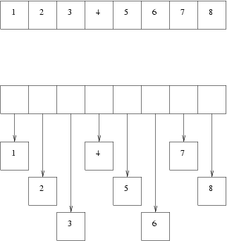

Nous sommes arrivé relativement loin dans ce tutorial et nous n'avons pas encore abordé la programmation fonctionnelle. Il serait imaginable de voir toutes les fonctionnalités données jusqu'à présent - rich data types, pattern matching, inférence de types, fonctions imbriquées - dans une espèce de «Super langage C». Ce sont certainement des fonctionnalités «cools» qui rendent le code concis, facile à lire et qui permettent d'avoir moins de bugs, mais elles n'ont que très peu à voir avec la programmation fonctionnelle.
En fait, la raison pour laquelle les langages fonctionnels sont si bien n'est pas grâce à la programmation fonctionnelle, mais parce que nous sommes restés avec des langages de type C pendant des années et pendant ce temps la pointe de la programmation a avancé considérablement.
Ainsi pendant que nous écrivions struct { int type; union { ... } } pour la n-ième fois, les programmeurs ML et haskell avaient déjà les safe variants et le pattern matching sur les types de données. Pendant qu'on faisait attention à bien faire des free() pour chaque malloc(), les langages à garbage collectors étaient arrivaient à faire mieux depuis les années 80.
Maintenant, arrêtons de tourner autour du pot, et abordons ce qu'est la programmation fonctionnelle.
La définition de base, bien que pas forcément claire est : «Dans un langage fonctionnel, les fonctions sont des citoyens de première classe»
Que de mots qui n'ont pas vraiment de sens. Voyons plutôt un exemple :
# let double x= x *2 in List.map double [ 1; 2; 3 ];; - : int list = [2; 4, 6]
Dans cet exemple, j'ai d'abord définit une fonction imbriquée appelée double qui prend un argument x et qui retourne x * 2. Puis map appelle double sur chaque élément de la liste donnée ([1; 2; 3]) pour produire le résultat : une liste avec chaque nombre doublé.
map est appelé une higher-order function (HOF). Les HOF sont juste une jolie manière de dire que la fonction prend une fonction parmi ses arguments.
Si vous êtes familiers avec le C/C++, alors cela ressemble au passage d'un pointeur de fonction. Java a une espèce d'abomination qu'on appelle une classe anonyme qui est une clôture stupide, lente et peu pratique. Si vous connaissez Perl alors vous devez déjà avoir utilisé les clôtures de Perl et sa fonction map, qui est exactement ce dont nous parlons. En fait, perl est un plutôt bon langage fonctionnel.
Les clôtures sont des fonctions qui portent une partie de l'«environnement» dans lequel elles ont été définies. En particulier, une clôture peut référencer des variables qui sont disponibles au moment de la définition. Généralisons la fonction précédente de façons à prendre n'importe quelle liste d'entiers et multiplier chaque élément par une valeur n arbitraire :
let multiply n list =
let f x =
n * x
in
List.map f list
;:
Ainsi :
# multiply 2 [1; 2; 3];; - : int list = [2; 4; 6] # multiply 5 [1; 2; 3];; - : int list = [5; 10; 15]
Le point important à noter à propos de la fonction multiply est la fonction imbriquée f. C'est une clôture. Regardez comment f utilise la valeur de n qui n'est pas passé en tant qu'argument explicite à f. A la place, f est pris de l'environnement - c'est un argument de la fonction multiply, ainsi disponible au sein de cette fonction.
Ceci peut paraître un peu trop raccourci, mais regardons de plus près à cet appel à map : List.map f list
map est défini dans le module List, très loin du code courrant. En d'autres mots, nous passons f dans un module défini «a long time ago, in a galaxy far far away». Tout ce que nous pouvons savoir c'est que ce code peut passer f à d'autres modules ou en garder une référence quelque part et l'appeler ultérieurement. Que ce soit le cas ou non, cette clôture va assurer que f aie toujours accès à l'environnement hérité, donc à n.
Voici un exemple concret de lablgtk. Ceci est une méthode d'une classe (nous n'avons pas encore abordé les classes et les objets pour l'instant, mais considérons juste cela comme une définition de fonction pour l'instant).
class html_skel obj = object (self)
...
...
method save_to_channel chan =
let receiver_fn content =
output_string chan content;
true
in
save obj receiver_fn
Tout d'abord, il faut savoir que la fonction save appelée à la fin de la méthode prend en second argument une fonction, en l'occurence receiver_fn. Il l'appelle à répétition avec des morceaux de textes que du widget qu'il essaye d'enregistrer.
Maintenant, jettons un oeil à receiver_fn. Cette fonction est une clôture correcte parce qu'elle garde une référence à chan venant de son environnement.
Définissons une fonction plus qui ne fait qu'ajouter deux entiers :
let plus a b = a + b ;;
Quelques questions pour les endormis du fond de la classe :
plus ?plus 2 3 ?plus 2 ?La première réponse est facile. plus est uen fonction qui prend deux arguments qui sont entiers et qui retourne un entier. Son type s'écrit ainsi :
plus : int -> int -> int
La deuxième réponse est encore plus évidente. plus 2 3 est un nombre, l'entier 5. Sa valeur et son type s'écrivent :
5 : int
Mais quid de la question 3 ? Il semblerait que plus 2 soit une erreur, un bug. Alors qu'en fait, il n'en est point. Si nous typons cela dans le toplevel d'OCaml, nous obtenons :
# plus 2;; - : int -> int = <fun>
Ceci n'est pas une erreur. Il nous dit que plus 2 est en fait une fonction, qui prend un int et qui retourne un int. Quelle genre de fonction cela est-il ? Essayons d'abord de lui donner un nom, puis de lui donner quelques entiers en argument, pour voir ce que ça donne :
# let f = plus 2;; val f : int -> int = <fun> # f 10;; - : int = 12 # f 15;; - : int = 17 # f 99;; - : int = 101
Ceci est une preuve par l'exemple suffisante pour nous dire que plus 2 est la fonction qu'ajoute 2 à des choses.
Revenons à la définition originelle, et remplaçons le premier argument, soit a, par la valeur 2 pour obtenir :
let plus 2 b = 2 + b ;; (* /!\ Ce n'est pas du code OCaml valide *)
On peut maintenant mieux voir pourquoi plus 2 est la fonction qui ajoute 2 à quelque chose.
En regardant le type de ces expressions, on peut démystifier la notation flèchée bizarre utilisée pour les types de fonctions :
plus : int -> int -> int
plus 2 : int -> int
plus 2 3 : int
Ce processus est appelé curryfication. Le nom vient de Haskell Curry qui a été à l'origine de choses importantes sur le lambda calcul. Comme j'essaye d'éviter d'entrer dans les mathématiques derrière OCaml, parce que ça rendrait le tutorial très ennuyeux et inutile, je n'irai pas plus loin sur le sujet. Pour trouver plus d'informations sur le sujet, une simple recherche google suffit.
Vous rappelez-vous des fonctions double et multiply vues précédemment ? multiply était définit ainsi :
let multiply n list =
let f x = n * x in
List.map f list
;;
Nous pouvons maintenant définir double, triple, etc, très facilement comme suit :
let double = multiply 2;; let triple = multiply 3;;
Ce sont de réelles fonctions, la preuve :
# double [1; 2; 3];; - : int list = [2; 4; 6] # triple [1; 2; 3];; - : int list = [3; 6; 9]
On peut aussi utiliser l'application partielle (sans la fonction intermédiaire f) de cette façon :
# let multiply n = List.map (( * ) n);; val multiply : int -> int list -> int list = <fun> # let double = multiply 2;; val double : int list -> int list = <fun> # let triple = multiply 3;; val triple : int list -> int list = <fun> # double [1; 2; 3];; - : int list = [2; 4; 6] # triple [1; 2; 3];; - : int list = [3; 6; 9]
Dans l'exemple ci-dessus, ((*) n) est l'application partielle de la fonction (*), c'est-à-dire, multiplier. À noter les espaces ajoutés pour qu'OCaml ne croit pas que c'est un début de commentaire.
On peut mettre des opérateurs infixes entre parenthèses pour faire des fonction. Voici une définition identique à la précédente avec la fonction plus :
# let plus = (+);; val plus : int -> int -> int = <fun> # plus 2 3;; - : int = 5
Voici encore plus de curryfication :
# List.map (plus 2) [1; 2; 3];; - : int list = [3; 4; 5] # let list_of_functions = List.map plus [1; 2; 3];; val list_of_functions : (int -> int) list = [<fun>; <fun>; <fun>]
La programmation fonctionnelle, comme n'importe quelle technique de programmation, est un outil utile dans votre boite à outils pour résoudre certaines classes de problèmes. Très utile pour les callbacks, qui sont utilisés dans les IHMs pour les boucles d'évènements. C'est excellent pour exprimer des algorithmes génériques. List.map est une fonction générique pour appliquer des fonction sur n'importe quel type de liste. De la même manière, on peut définir des fonctions génériques sur les arbres. Certains types de problèmes d'arithmétique peuvent être résolus plus rapidement avec la programmation fonctionnelle (par exemple calculer la dérivé d'une fonction mathématique).
Une fonction pure est une fonction sans aucun effet de bord. Un effet de bord signifie que la fonction garde une sorte d'état caché en son sein. strlen() est un exemple de fonction pure en C. Si on appelle strlen() avec la même chaîne, elle retournera toujours la même taille. La sortie de strlen() (la taille) ne dépend que des entrées (la chaîne) et rien d'autre. Plein de fonctions en C sont, malheureusement, impures. Par exemple, malloc(), évidemment, repose sur beaucoup d'éléments d'états internes (les objets alloués sur le tas, le type d'allocation utilisé, la façon de prendre des pages de l'OS, etc..).
Les langages dérivés de ML tel que OCaml sont «presque purs». Ils autorisent des effets de bord au travers des références et des tableaux, mais la plupart des codes que vous écrirez seront fonctionnels purs parce qu'ils encouragent cette pensée. Haskell, un autre langage fonctionnel, est pur fonctionnel. OCaml est donc plus pratique parce qu'écrire des fonctions impures est parfois utile.
Voici les avantages théoriques d'avoir des fonctions pures. Un avantage est que si une fonction est pure, alors elle peut être appelée plusieurs fois avec les même arguments, le compilateur n'aura qu'a appeler la fonction qu'une seule fois. Un bon exemple en C est :
for (i = 0; i < strlen(s); ++i) {
// Du code qui n'affecte pas s
}
Si nativement compilé, la boucle est en O(n²) sur la taille de s parce que strlen(s) est appelé à chaque fois et strlen() doit itérer sur tout s. Si le compilateur est assez intelligent pour se rendre compte que strlen() est purement fonctionnel et que s n'est pas modifié dans la boucle, alors il peut retirer les appels redondants à strlen() et passer la boucle en O(n). Les compilateurs font-ils vraiment cela ? Dans le cas de strlen très certainement, mais dans d'autres, probablement pas.
Se concentrer en écrivant des fonctions fonctionnelles pures permettent d'écrire du code réutilisable en utilisant l'approche bottom-up, testant chaque petite fonction au fur et à mesure de l'avancement. La mode actuelle est de projeter les programmes en utilisant une approche top-bottom, mais dans l'opinion de l'auteur, cela résulte souvent à des échecs de projets.
Les langages dérivés de C et de ML sont stricts. Haskell et Miranda ne sont pas stricts, ie ce sont des langages à évaluation paresseuse. OCaml est stricte par défaut mais autorise l'évaluation paresseuse lorsque nécessaire.
Dans un langage à évaluation stricte, les arguments des fonctions sont toujours évalués en premier, et le résultat est alors passé à la fonction. Par exemple dans un langage à évaluation stricte, cet appel va toujours sortir par une erreur de division par zéro :
give_me_a_three (1/0);;
Si vous avez programmé dans n'importe quel langage conventionnel, c'est le comportement auquel vous vous attendrez, et vous serez surpris qu'il en soit autrement.
Dans un langage à évaluation paresseuse, des choses bizarres se passent. Les arguments de fonctions ne sont évalués que si la fonction les utilise. Vous rappelez-vous que la fonction give_me_a_three n'utilise pas ses arguments, et retourne toujours 3 ? Dans un langage à évaluation paresseuse, cet appel précédent ne fera pas d'erreur, simplement parce que give_me_a_three ne regarde jamais à ses arguments, donc si l'argument n'est jamais évalué, la division par zéro n'arrive pas.
Les langages à analyse paresseuse permettent de faire d'autres choses bizarres, comme la définition d'une liste infinie. Tant qu'on essaye pas d'itérer sur la totalité de la liste, cela fonctionne.
OCaml est un langage à évaluation stricte, mais a un module d'évaluation paresseuse (Lazy) qui permettent d'écrire des expressions paresseuses. Voici un exemple. D'abord nous créons une expression paresseuse pour 1/0 :
# let lazy_expr = lazy (1/0);; val lazy_expr : int lazy_t = <lazy>
A noter que le type de l'expression est int lazy_t
Parce que give_me_a_three prend un 'a (tout type) nous pouvons passé cette expression à la fonction :
# give_me_a_three lazy_expr;; - : int = 3;;
Pour évaluer une expression paresseuse, nous devons utiliser la fonction Lazy.force :
# Lazy.force lazy_expr;; Exception : Division_by_zero.
(NDT: trouver une traduction correcte pour «boxed» et «unboxed»)
Un terme qu'on entend beaucoup lorsqu'on parle de langages fonctionnels est «boxed». J'étais très confus lorsque j'ai entendu ce terme pour la première fois, mais en fait la distinction entre types «boxed» et «unboxed» est très simple si vous avez déjà fait du C, du C++ ou du java avant (en Perl tout est «boxed»).
La façon de voir un objet «boxed» est de penser à un objet qui a été alloué dans le tas en utilisant malloc() en C (ou new en C++), et/ou qui est y est réferré via un pointeur. Prenons ce programme C :
#include <stdio.h>
void printit (int* ptr) {
printf("the number is %d\n", *ptr);
}
int main () {
int a = 3;
int *p = &a;
printit (p);
return 0;
}
La variable a est allouée dans la pile, et est clairement «unboxed».
La fonction printit() prends un entier «boxed» et l'affiche.
Le diagramme ci-dessous (NDT: non-existant à l'écriture de la traduction) montre un tableau de «unboxed» (en haut) face à des entiers «unboxed» (en bas) :

Pas de prix pour avoir deviné que le tableau d'entiers «unboxed» est plus rapide que le tableau d'entiers «boxed». De plus, parce qu'il y a moins d'allocations séparés, le garbage collector est plus rapide à nettoyer et plus simple sur le tableau d'objets «unboxed».
En C ou C++ vous n'aurez aucun problème pour construire chacun des tableaux ci-dessus. En java, on a deux types, int qui est «unboxed» et Integer qui est «boxed», et donc considérablement moins efficace. En OCaml, tous les types primitifs sont «unboxed».